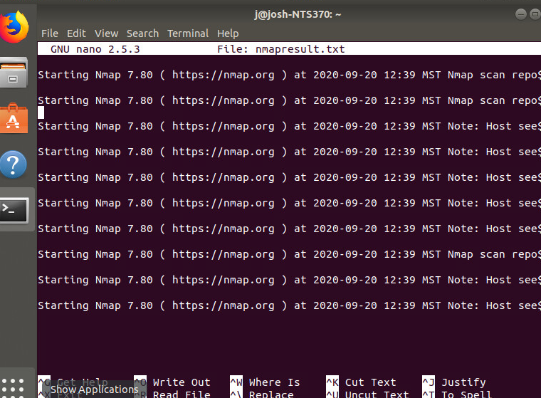
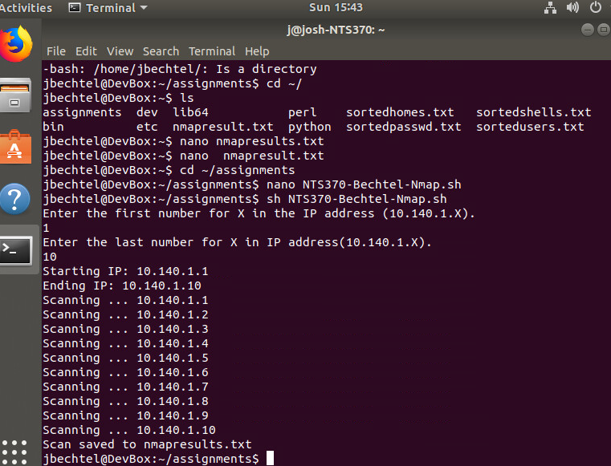

1. Create a network infrastructure design communications document that includes identified hardware components,
connections to outside world, identified physical layer connectivity (media) and addressing, including operational and
security components in the design.
2. Install, configure and test security hardware and software tools with supporting documentation such as port scanners,
vulnerability detection systems, intrusion detection systems, firewalls, system hardening, anti-virus tools, patch
management, auditing and assessment.
Images below of utilizing Nmap to scan multiple IP addresses.


3. Construct, implement and document a script or a program to automate a security-related process or other tasks such as
installation, administration, management, mapping resources, logon scripts, patch management, updates, auditing,
analysis and assessment.
App install automation with Ansible
4. Create a policy or procedure that addresses events such as: a disaster recovery plan, a business continuity plan, an
incident response policy, an acceptable usage document, an information security policy, a physical security policy,
assessments or troubleshooting procedures.
5. Develop a research report or implementation plan concerning legal and ethical best practices and mandated requirements
that pertain to information security.
6. Research, document, test and evaluate several current industry information security based threats, risks, malicious
activities, covert methodology, encryption technologies, mitigation techniques or unconventional tactics to prevent loss of
sensitive information and data confidentiality, integrity and availability